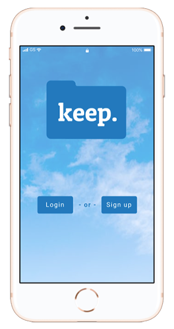

Keep.
Keep is a product designed to simplify cloud storage and file organization.
SUMMARY
With so many cloud storage and file backup options available, it can be overwhelming to choose one. Keep is a cloud storage service that is here to simplify the process for you. No clutter, just a simple and reliable way to backup files and keep everything organized.
ROLES
User Research
UX Design
Branding
TOOLS
Figma
Draw.io
Adobe Illustrator
The Problem
The client wanted to create a cloud storage service and considered a wide variety of features from organizing content to sharing and collaborating with others. They needed guidance on what direction to take the project in to be competitive in the cloud storage space.
The Solution
Keep is a simple and easy-to-use cloud storage app with a focus on making sure your files are safe and organized. The goal of Keep is to simplify the process of organizing and backing up files, making it a worry-free process for the user.
Competitive analysis
I created a SWOT analysis and researched brands that each have different specialities when it comes to cloud storage. Depending on which direction we went in, one of these brands would be a main competitor.

Google Drive not only provides file organization but allows users to create documents, spreadsheets and presentations while collaborating and sharing easily with others. It has a lot of competition with companies like Dropbox and also Microsoft Office.
Evernote targets the specific need for organizing notes, lists, voice memos which other similar programs don’t focus on but this also limits its capabilities to a specific niche.
Pinterest allows users to create different boards for organizing their content visually, while also acting as a bookmarking tool for saving links. Other social media apps are adding comparable features, which reduces the need for an additional bookmarking site.
User Research
I conducted a survey to gauge how people are currently using cloud storage services and to find out what features are most important to them. The survey revealed what people are most frustrated with and where improvements can be made.
95%
of survey respondents use cloud storage for personal use, 50% also us it for business and 45% use it for school.
Top 3 Desired Features
- File backup
- Organizing content into folders or categories
- Uploading files
Users’ biggest frustrations
- Privacy/security
- Accessing files across devices
- Accidentally deleting files
Personas
I conducted a survey to gauge how people are currently using cloud storage services and to find out what features are most important to them. The survey revealed what people are most frustrated with and where improvements can be made.

Alex
Photography Student
- 19 years old
- College student
- Savannah, GA
GOALS
- Staying organized with all the projects he’s working on
- Having a place to store all his photo & music files
- Building a photography portfolio
FRUSTRATIONS
- He keeps running out of hard drive space
- It’s hard to keep track of all his files and projects
- He has accidentally lost whole projects before

Courtney
freelance illustrator
- 34 years old
- Illustrator/Graphic Artist
- San Francisco, CA
GOALS
- Backing up all her work
- Keeping all her client files organized
- Easily sharing files with clients
FRUSTRATIONS
- Needs to be able to access her files across multiple devices when she’s on the go
- Needs a reliable service for her business

Kristy
business owner
- 45 years old
- Owns a PR agency
- New York, NY
GOALS
- Keeping all business files private and confidential
- Making sure all employees can access files
- Being able to access files when traveling
FRUSTRATIONS
- She’s not sure how secure her company’s files are
- She needs a user friendly program to teach her employees
User Flows
The next step was to create user flows for these tasks which included creating an account, signing in, uploading a file, organizing a file and upgrading an account. I started with sketching multiple flows for each task before finalizing them with digital versions. This process helped me work out the simplest way for users to complete a task.
Wireframes
Once the user flows were determined, I sketched out multiple iterations for the website, before designing the final wireframes in Figma. From there, I create a lo-fi prototype of the desktop site.

Usability Testing
The lo-fi prototype was then used to conduct usability testing in-person and over video call. Users were asked to complete the tasks outlined in my user flows. Through these tests, I discovered some minor changes I needed to make for better usability such as making the file name clickable for viewing the file and making folder names highlight so the user can see when it is selected.
Tasks:
- Create an account.
- Upload a file to your dashboard
- View and download a file.
- Create a new folder.
- Move a file into the new folder.
Branding
To start the branding process, I sketched out various logo ideas and created a mind map. I wanted the logo to convey simplicity and also represent file storage easily to the user.
Typography
Patua one
Keep’s primary font is Patua One. This font is bold yet simple and gives a traditional feeling to the brand.
Roboto
The complimentary font is Roboto, which is a simple, versatile and easy to read font. it can also be used in a wide variety of styles from thin to black to offer subtle contrast in the type.
Colors
The primary color of teal gives a sense of reliability and the white offers a clean and simple feel. The secondary colors of light blue and yellow provide feelings of happiness and comfort for the user.
-
#1B79DD
-
#414040
-
#FFFFFF
-
#96CDF5
-
#FFDF51
-
#D9D9D9
Style Guide
The brand style guide contains guidelines on logo usage, fonts, UI elements, usage examples, and brand voice all in one place. This will help to keep consistency on all brand designs and products in the future.

Hifi Prototype
Hi-fidelity mobile mockups were created in Figma, based around the same user flows from earlier in the process.



Preference Testing
When deciding on certain design elements, I created online preference tests using Usability Hub where I could gain feedback on the visual design. These tests provided insight into which design choices stood out the best visually and which ones the users preferred the most.

Usability Testing
In-person usability testing with the mobile prototype shed light on several pain points for users. Users did not understand which part of the app they were currently in, so this changed from a filled icon to a highlight around the icon. The upgrade option was also difficult to find, so the upgrade account menu moved from the user avatar to the settings icon.

Conclusion
This project started with a broad idea for a product and through user research and a competitive analysis, I determined what direction would be best for a new product to enter the cloud storage market. Surveys and user persona development helped determine the most important features to focus on.
Through sketching, wireframing and usability testing I was able to identify problems and quickly make improvements. Preference tests and further usability testing with a hifi prototype allowed for feedback not only on functionality but also the branding and visual design. Taking into account the user feedback from all steps of this process allowed for the best possible product across mobile and desktop.